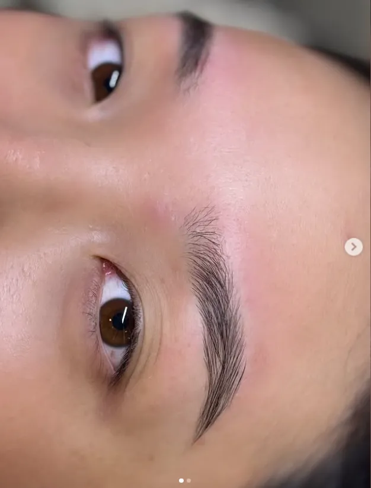

Sobrancelhas
Golden Brows
O design de sobrancelhas personalizado da clínica. Inclui a limpeza e a definição do desenho ideal para o formato do seu rosto. É o procedimento de entrada e o mais realizado na manutenção. Também procurado como design básico ou limpeza de sobrancelha.
- Sessão
- ≈ 50 minutos
- Manutenção
- 15 a 20 dias
- Indicado para
- Quem quer modelar e definir as sobrancelhas com regularidade
R$ 50,00por sessão
Consultar valor e agendar